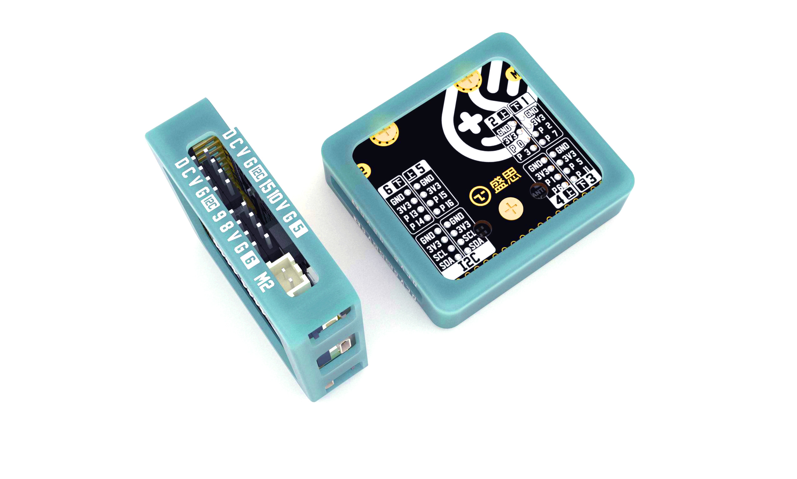

拓展板入门教程¶
本章节将讲解掌控拓展板parrot基本的使用,如电机驱动、语音播放、TTS语音合成、红外发射等功能。有关,掌控拓展板技术参数详细说明,请查阅 掌控拓展板介绍 章节。
电机驱动¶
拓展板支持2路的PWM电机驱动,你可以使用直流电机马达,如TT马达,N20等。
下面讲解,使用电机如何编程
首先导入parrot模块:
import parrot
M1、M2,正转速度设为80:
import parrot # 导入parrot 模块
parrot.set_speed(parrot.MOTOR_1,80) # 设置M1正转,速度为80
parrot.set_speed(parrot.MOTOR_2,80) # 设置M2正转,速度为80
反转:
parrot.set_speed(parrot.MOTOR_1,-80) # 设置M1反转,速度为80
parrot.set_speed(parrot.MOTOR_2,-80) # 设置M2反转,速度为80
停止:
parrot.set_speed(parrot.MOTOR_1,0) # 停止
parrot.set_speed(parrot.MOTOR_2,0) # 停止
控制电机速度使用到函数 set_speed(motor_no, speed) 。motor_no 参数为电机编号,可选编号常量有 MOTOR_1 、MOTOR_2 。 speed 参数为速度,范围-100~100,正值表示正转,负值时表示负转。
当某些时候你需要知道当前设置的速度值,你可以用 get_speed(motor_no) 返回当前电机速度。
音频播放¶
拓展板内置扬声器,支持wav、MP3格式为音频播放。可以播放掌控板文件系统的音频,或者网络的音频资源。
播放本地音频¶
Attention
播放本地mp3音频由于受micropython文件系统限制和RAM大小限制,当文件大于1M基本很难下载下去。所以对音频文件的大小有所限制,应尽可能的小。
首先,将 音频素材 上传至掌控板的文件系统。
首先导入audio模块:
import audio
播放本地mp3音频:
import audio # 导入audio对象
audio.player_init() # 播放初始化
audio.play("music_1.mp3") # 播放"music_1.mp3"音频
Hint
可在以下网站获取自己需要的音频。注意，最终上传至文件系统上的音频还需要压缩下，减低文件大小！
语音合成(TTS)¶
TTS是Text To Speech的缩写，即“从文本到语音”，是人机对话的一部分，将文本转化问文字，让机器能够说话。
红外发射¶
我们生活中用到不少红外技术，如电视、空调等家电的遥控器。将编码数据经过载波后，通过红外管发射出去。红外接收设备，对编码数据进行解码，得到有效数据。实现控制。
简单来说，红外编码的有效数据由1 Btyes 用户码 + 1 Btyes 命令码。一般用户码用于区分厂家或供应商，实际对应按键的键值的是命令码。
在红外发射前，需要生成红外编码的数据,此处用到NEC编码:
>>> from parrot import IR_encode, IR
>>> ir_buf = ir_code.encode_nec(0x01, 0x01) # 用户码0x01 , 命令码0x01
得到红外编码数据后，我们就可以发送红外数据了:
>>> ir = IR() # 实例红外抽象类
>>> ir.send(ir_buf) #发送预先编译好的红外编码
由于红外的编码协议很多。或者在不知道红外遥控器的码值时，怎么才可能复刻它的码呢？这时，你需要用到红外学习功能。 它，可以记录下红外的信号。再将记录的红外信号，发送出去。
拓展板的红外管与被学习对象的红外管正对着，距离应在1CM内（信号的强度，直接影响到学习的成功率）
开始学习:
>>> ir.learn()
在5秒内常按住，要学习的按键。等待返回结果。
>>> ir.learn()
>>> True
>>>
返回为True时，说明学习成功，Fail则说明学习失败，重复以上步骤重新学习即可。
获取学习的红外编码数据:
>>> ir_learn = ir.get_learn_data()
得到学习数据后，就可以红外发射啦:
>>> ir.send(ir_learn)